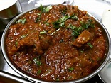

Indian Style Mutton Curry

Description
Mutton Curry is a rich, spicy dish made with tender mutton pieces and a flavorful blend of Indian spices. It pairs perfectly with steamed rice or naan.
Ingredients
- Mutton (1 kg, cleaned)
- Onions (3 large, finely chopped)
- Tomatoes (3 large, pureed)
- Garlic paste (1 tablespoon)
- Ginger paste (1 tablespoon)
- Yogurt (200 g)
- Spices (coriander, cumin, red chili powder, turmeric, garam masala)
- Fresh coriander leaves (for garnish)
- Salt (to taste)
- Cooking oil or ghee
Steps to Prepare
- Marinate the mutton with yogurt, salt, and spices. Let it rest for 1-2 hours.
- Heat oil in a pan and sauté onions until golden brown.
- Add garlic and ginger paste, followed by the tomato puree. Cook until the oil separates.
- Add the marinated mutton and cook on medium heat until the spices blend well.
- Add water and cook the curry until the mutton is tender.
- Garnish with fresh coriander leaves and serve hot with rice or naan.